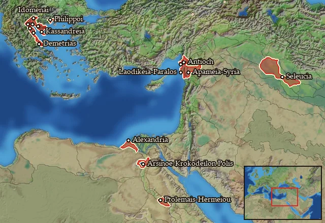

RTR: Imperium Surrectum
RTR: Imperium SurrectumSeleucid Empire


- difficulty Easy
- Eastern Hellenistic culture
- believes
 Macedonian
Macedonian - 115 settlements
- capital Seleucia
- 355,200 manpower
- 120 characters
- 27 faction units
- 438 regional units
The campaign brief
"Fortune favours the bold." – Simonides of Keos
Roughly two decades before the battle of Chaironeia, a noblewoman called Laodike gave birth to her son in the small town Oropos in Macedonia. These days, one can hear the stories that Apollo himself, the god of music and the sun, was the true father of this child. But officially it was the son of Antiochos, a man of the army who hailed from the mountain area of Orestis. That boy was named Seleukos, and with his parents holding close relations to the royal court, he enjoyed a formidable education. Once Seleukos became a teenager, he served as a squire to king Philip II, and upon becoming a man, joined the new royal battle guard, the Hypaspists. After the battle of Chaironeia and the murder of Philip, the Hypaspists accompanied the demigod Alexander on his brave and magnificent adventures in the East. The red-haired hero brought down the empire of Persia, and the Hypaspists followed him through the endless deserts into India. Seleukos emerged not only as an impressive soldier, but also proved his abilities to command and organise. Thus, it was no surprise when the godly Alexander elected him for his elite Companions, the Hetairoi. At the battle on the river called Hydaspes in the mythical land of India, Seleukos commanded part of the right wing of the army and defeated the enemy's monstrous elephants.
Upon their return to Susa, Seleukos married Apame, a woman whose beauty grandly excelled that of her native Sogdia, a rocky badland in the wild northeast. Apame gave birth to Antiochos, the first and most beloved son of Seleukos. It was at this time that the gods on Olympus felt that Alexander had done enough in the world of the mortals, and he died in the palace of Babylon. A most ambitious and very Greek competition between his generals emerged, and Seleukos took part in the early Diadoch wars on the side of the royal regent Perdikkas, but later found an esteemed friend in Ptolemaios, who had become the pharaoh of Egypt. Together they put up a fierce resistance against the mighty Antigonos Monophtalmos, who only had one eye, but the ambition to rule the whole world. They defeated his young son Demetrios at Gaza in 312 BC and Ptolemaios sent his friend eastwards, to reclaim his rule over Babylon. Accompanied by only a small contingent of elite soldiers, Seleukos was joyfully welcomed in that ancient city, and it was then that he laid the foundation for his own empire.
When Antigonos heard of these events, he was furious and started a war against Babylon the following year. But the courageous Seleukos refused to give in and repelled the attacks of the One-Eyed time and again. After his victory, Seleukos advanced eastwards and was acclaimed as the new ruler of these Eastern people, also signing a worthy treaty with Sandrokottos (whom his own people call Chandragupta), the lord of the Indians. The brilliant Seleukos gave him empty deserts in return for 500 terrible war elephants. With those, he strengthened his army and then returned to the West, where he joined Ptolemaios and Lysimachos at the battle of Ipsos in 302 BC. In this heroic engagement, his elephants held off Demetrios Poliorketes' famed cavalry and Antigonos was finally killed. While Demetrios became a refugee and Seleukos was able to annex wide parts of Asia Minor and northern Phoenicia into his dominion, sadly a quarrel emerged between him and his friend, the Pharaoh. Both men, with only the best intentions, laid claim on the strategically important land of Koile Syria. For now, they settled their conflict peacefully, but that did not solve the problem in the long term.
In 286 BC he captured Demetrios and turned on Lysimachos, his last remaining foe, who ruled over his own little empire in Thrace. While Seleukos assembled his troops, rather cheerless news arrived from Alexandria, where the great Ptolemaois had died. His son Ptolemaios II succeeded him as Pharaoh, but his elder son Ptolemaios Keraunos was expelled. Upon arriving in Asia Minor, Seleukos decided to take Keraunos with him, thereby establishing a rather disturbed relationship with Ptolemaios II. The Seleucid Army met Lysimachos in battle at Kouroupedion in 281 BC, and both kings, who had campaigned from Macedon to India and back, and then fought endless further wars over the decades, rode into battle as old men. Seleukos won a decisive victory and Lysimachos paid with his life, which ended after 80 exhausting years. Seleukos now only had one last dream: to return to his native Macedon and hopefully unite it with his empire in the East. But when Keraunos realised what the price was, he betrayed him. The murder of Seleukos, who died, 77 years of age, after having done and achieved more in his life than most men could ever dream of, sent shockwaves through the Hellenistic world.
His son Antiochos thus faced a more than formidable challenge to keep the empire together when he inherited the kingship. Revolts broke out in Syria and Asia Minor; Bithynia and Cappadocia asserted their independence and Keraunos ruled in Macedon. To make bad matters worse, the Gauls ravaged Greece and the Bithynian dastard king invited them into Asia. Not fearing the ferocious Barbarians, Antiochos rode into battle and trampled the Celts with his mighty elephants. Seeing his rival king busy in the North, Ptolemaios II seized the chance and betrayed the old friendship of their fathers to invade Koile Syria only a few months after the Elephant Battle. Bold campaigns from both sides eventually failed, and a year ago Antiochos had to settle for peace with his most powerful foe. Now Damascus and the adjacent regions have fallen into the hands of our enemies, Cappadocia and Bithynia had to be forfeited and the Galatians have settled in central Anatolia.
But Antiochos possesses the greatest kingdom in the known world, and an army made up of the finest Macedonian and Greek soldiers, including the Hetairoi and Hypaspists, but also a vast reserve of native warriors and - of course! - the great herd of elephants who carried the day against the Galatians five years ago. His son has just come of age, the merchants of Antiocheia often travel far into the lands of India to bring the finest luxuries of the world to the court, and Antigonos Gonatas, a friend of Antiochos and rival to Ptolemaios II, now rules as king of Macedonia. The gods still hold a bright future for the Seleucid dynasty, but Antiochos must be wary of his enemies, internal as well as external, and wait for the right moment to strike and reclaim the lost lands in Syria and Asia Minor. May he be guided by Zeus to victory!
Starting settlements
Seleucid Empire begins with 115 settlements and 355,200 manpower.
| Settlement | Region | Size | Manpower | Already built | Settlement | Region | Size | Manpower | Already built |
|---|---|---|---|---|---|---|---|---|---|
| Seleucia (capital) | Mesopotamia | huge city | 16,000 | 15 buildings | Antioch | Syria | huge city | 17,000 | 13 buildings |
| Damascus | Damashq | city | 4,400 | 12 buildings | Edessa | Osrhoene | large town | 3,800 | 12 buildings |
| Antiocheia-Mygdonia | Mygdonia-Syria | city | 3,500 | 12 buildings | Arbela | Arbelitis | large town | 3,000 | 13 buildings |
| Doura-Europos | Tingene | large town | 2,100 | 13 buildings | Uruk | Orchoe | large city | 5,500 | 14 buildings |
| Susa | Sousiane | large city | 8,500 | 16 buildings | Ephesos | Ionia | large city | 10,000 | 16 buildings |
| Sardis | Lydia | large city | 11,000 | 13 buildings | Apameia-Kelainai | Paroreia Phrygia | large town | 5,000 | 12 buildings |
| Sagalassos | Pisidia | large town | 2,200 | 9 buildings | Side | Pamphylia | large town | 4,000 | 13 buildings |
| Ikonion | Lykaonia | large town | 2,800 | 12 buildings | Kybistra | Kappadokike Kilikia | town | 1,600 | 5 buildings |
| Tarsos | Kilikia | city | 5,000 | 15 buildings | Ekbatana | Media | city | 5,500 | 15 buildings |
| Europos-Rhagai | Rhagiane | large town | 3,200 | 13 buildings | Hekatompylos | Parthia | city | 3,800 | 12 buildings |
| Zadrakarta | Boreia Hyrkania | large town | 3,600 | 12 buildings | Gabai | Ano Persia | town | 2,000 | 7 buildings |
| Alexandreia-Karmania | Karmania | large town | 2,900 | 11 buildings | Prophthasia | Anaouon | city | 2,600 | 11 buildings |
| Alexandreia-Ariane | Ariane | city | 4,800 | 12 buildings | Antiocheia-Margiane | Margiane | large city | 6,500 | 14 buildings |
| Abydos | Propontis | large town | 2,800 | 10 buildings | Alexandreia-Troas | Troias | city | 4,600 | 14 buildings |
| Adramyttion | Adramyttenos Kolpos | large town | 3,400 | 12 buildings | Thyateira | Pelopeia | large town | 2,800 | 11 buildings |
| Smyrna | Nea Ionia | city | 3,600 | 13 buildings | Klazomenai | Klazomenia | large town | 3,500 | 11 buildings |
| Laodikeia-Katakekaumene | Katakekaumene Lykaonia | town | 1,600 | 6 buildings | Pessinous | Pessinountis | town | 1,800 | 7 buildings |
| Seleukeia-Kalykadnos | Anatolike Tracheiotis | large town | 2,800 | 13 buildings | Daskyleion | Mysia | large town | 2,900 | 13 buildings |
| Eukarpia | Orgasia | town | 1,700 | 6 buildings | Gordion | Megale Phrygia | large town | 2,600 | 10 buildings |
| Magnesia-Maiandros | Maiandros | large town | 2,600 | 12 buildings | Seleukeia-Tralleis | Euantheia | large town | 3,800 | 14 buildings |
| Kyrrhos | Kyrrhestike | large town | 3,400 | 13 buildings | Heliou Polis-Syria | Massyas Pedion | town | 1,800 | 8 buildings |
| Apameia-Syria | Apamene | large city | 5,600 | 13 buildings | Seleukeia-Pieria | Pieria-Syria | city | 6,600 | 15 buildings |
| Laodikeia-Paralos | Leuke Akte | city | 6,000 | 13 buildings | Byblos | Gebal | large town | 2,800 | 12 buildings |
| Beroia-Syria | Khalab | large town | 2,700 | 11 buildings | Doliche | Dolicheia | town | 1,600 | 6 buildings |
| Sareisa-Satalka | Gordyene | large town | 1,700 | 10 buildings | Chala | Chalonitis | town | 1,700 | 6 buildings |
| Babylon | Babylonia | large city | 7,000 | 15 buildings | Nikephorion | Nikephoreia | town | 1,900 | 7 buildings |
| Hierapolis | Bambyke | town | 2,400 | 5 buildings | Apameia-Sittakene | Sittakene | large town | 3,500 | 12 buildings |
| Artemita | Apolloniatis-Mesopotamia | large town | 2,300 | 12 buildings | Apameia-Zeugma | Zeugma-Euphrates | large town | 1,900 | 12 buildings |
| Arrhapa | Arrhapachitis | large town | 1,800 | 10 buildings | Seleukeia-Soloke | Elymais | large town | 3,300 | 12 buildings |
| Assur | Assyria | large town | 2,900 | 12 buildings | Nippur | Nippour | large town | 3,000 | 13 buildings |
| Is | Ankobaritis | town | 1,900 | 5 buildings | Sousia | Hesperos Ariane | town | 2,500 | 7 buildings |
| Antiocheia-Persis | Taokene | city | 2,600 | 14 buildings | Kyropolis-Kadousia | Kadousia | town | 1,900 | 8 buildings |
| Apameia-Rhagiane | Notia Parthia | large town | 2,800 | 11 buildings | Laodikeia-Media | Syromedia | town | 2,000 | 7 buildings |
| Tagai | Komisene | large town | 1,800 | 9 buildings | Amardion Phrourion | Amardokaia-Anariakaia | town | 1,400 | 4 buildings |
| Sirynx-Tambrax | Hyrkania | city | 4,100 | 14 buildings | Lampsakos | Pityoussa | city | 3,600 | 14 buildings |
| Skepsis | Ano Troias | large town | 2,000 | 10 buildings | Hypaipa | Kaystros | town | 1,600 | 7 buildings |
| Magnesia-Sipylos | Sipylos | large town | 1,700 | 11 buildings | Toriaion | Anatolike Phrygia | town | 1,800 | 5 buildings |
| Hierapolis-Charonia | Charonia | town | 2,100 | 8 buildings | Blaundos | Mlaundos | town | 1,600 | 5 buildings |
| Aizanoi | Aizanitis | town | 1,800 | 3 buildings | Aphrodisias | Lelegia | town | 1,900 | 5 buildings |
| Antiocheia-Alabanda | Marsyas | town | 1,900 | 5 buildings | Stratonikeia | Idrias | large town | 2,300 | 11 buildings |
| Antiocheia-Pisidia | Paroreia Pisidia | town | 1,500 | 5 buildings | Gorbeous | Korbeous | town | 1,300 | 5 buildings |
| Issos | Issikos Kolpos | large town | 2,100 | 12 buildings | Kastabala | Pyramos | town | 2,000 | 6 buildings |
| Melita | Melitene | town | 2,500 | 8 buildings | Komana-Kappadokia | Kataonia | large town | 2,800 | 9 buildings |
| Mallos | Mallotis | large town | 3,300 | 12 buildings | Soloi-Kilikia | Mese Kilikia | large town | 2,400 | 13 buildings |
| Arethousa | Emesene | town | 1,800 | 7 buildings | Chalkis-Belos | Belos | town | 2,000 | 5 buildings |
| Amathe | Khamat | town | 1,800 | 6 buildings | Lysimacheia | Kardia | city | 4,300 | 15 buildings |
| Elaious | Elaiousa | large town | 2,100 | 10 buildings | Pinaka | Notia Gordyene | large town | 2,000 | 11 buildings |
| Dorylaion | Dorylaia | town | 1,400 | 6 buildings | Ninos | Ninawa | large town | 1,600 | 12 buildings |
| Karrhai | Kharranu | large town | 1,500 | 11 buildings | Amphipolis-Chalybonitis | Anatolike Chalybonitis | large town | 2,200 | 10 buildings |
| Anthemousias-Batnai | Anthemousia | town | 1,800 | 6 buildings | Thelme | Dytike Apolloniatis | large town | 1,900 | 11 buildings |
| Sittake | Boreia Sittakene | city | 1,800 | 11 buildings | Charmande | Chaldaia | town | 1,300 | 4 buildings |
| Sadrakai | Artakene | town | 1,800 | 3 buildings | Seleukeia-Erythtreia | Paralia Chaldaia | large town | 1,900 | 13 buildings |
| Nisa | Nisaia | town | 2,200 | 7 buildings | Apauarktike | Apauarktikene | town | 1,500 | 5 buildings |
| Alexandreia-Drangiane | Drangiane | large town | 2,600 | 10 buildings | Adrapana | Sagartia | large town | 2,000 | 9 buildings |
| Derbikon Taphai | Derbikia | town | 1,000 | 5 buildings | Zetis | Notia Karmania | large town | 1,400 | 14 buildings |
| Achaia Polis | Mese Ariane | town | 1,400 | 4 buildings | Tapyron Phrourion | Tapyria-Kyrtia | town | 1,200 | 3 buildings |
| Ouxion Phrourion | Ouxia-Paraitakene | town | 1,500 | 5 buildings | Kossaion Phrourion | Kossaia-Mardia | town | 1,700 | 5 buildings |
| Iasonion | Notia Margiane | town | 1,600 | 3 buildings |
What is already built in each settlement
Seleucia, in Mesopotamia: State Mint (Civic), Imperial Palace, Stone Wall, Grain Export Silos (Food trade), Homeland, Aqueduct (Sanitation), Region Information Scroll, Highways, Irrigation Aqueducts (Crops), Large Forum, Large Temple, Odeon (Leisure), Baking Guild (Urban), Fruit Dryer (Rural), Basic Armoury
Antioch, in Syria: Imperial Palace, Stone Wall, Homeland, Region Information Scroll, Highways, Healing Sanctuary (Healing), Large Forum, Paradise of Daphne, Irrigation Aqueducts (Crops), State Mint (Civic), Silk Market (Urban), Fruit Dryer (Rural), Basic Armoury
Damascus, in Damashq: Governor's Palace, Small Stone Wall, Direct Rule, Region Information Scroll, Paved Roads, Physician's Clinics (Healing), Basin Irrigation (Crops), Local Market, Temple, Perfume Maker (Urban), Vineyard (Rural), Waystations and Garrisons
Edessa, in Osrhoene: Large Colony, Governor's Villa, Wooden Palisade, Direct Rule, Cisterns (Sanitation), Region Information Scroll, Local Market, Water Covenants (Husbandry), Saltworks (Industry), Shrine, Weavery (Urban), Local Garrisons
Antiocheia-Mygdonia, in Mygdonia-Syria: Large Colony, Governor's Palace, Small Stone Wall, Direct Rule, Sewers (Sanitation), Region Information Scroll, Magistrates' Court (Civic), Local Market, Water Covenants (Husbandry), Large Temple, Weavery (Urban), Basic Armoury
Arbela, in Arbelitis: Small Colony, Governor's Villa, Wooden Palisade, Indirect Rule, Cisterns (Sanitation), Region Information Scroll, Roads, Local Market, Tar Gatherer (Industry), Shrine, Horse Trainer (Rural), Waystations and Garrisons, Contour Furrows (Crops)
Doura-Europos, in Tingene: Large Colony, Governor's Villa, Wooden Palisade, Direct Rule, Cisterns (Sanitation), Region Information Scroll, Roads, Irrigation Ditches (Crops), Local Barter, Tar Gatherer (Industry), Temple, Camel Herd (Rural), Waystations and Garrisons
Uruk, in Orchoe: Pro-Consul's Palace, Stone Wall, Dependency, Public Baths (Sanitation), Region Information Scroll, Paved Roads, Forum, Grain Export Silos (Food trade), Irrigation Aqueducts (Crops), Magistrates' Court (Civic), Large Temple, Brewing Quarter (Urban), Date & Palm Wine Market (Rural), Waystations and Garrisons
Susa, in Sousiane: Large Colony, Pro-Consul's Palace, Stone Wall, Direct Rule, Region Information Scroll, Highways, Forum, Public Baths (Sanitation), Grain Export Silos (Food trade), Irrigation Aqueducts (Crops), State Mint (Civic), Large Temple, Pitch Rendering Kilns (Industry), Brewing Quarter (Urban), Date & Palm Wine Market (Rural), Permanent Military Garrisons
Ephesos, in Ionia: Pro-Consul's Palace, Stone Wall, Dependency, Public Baths (Sanitation), Region Information Scroll, Paved Roads, Forum, Grain Export Silos (Food trade), Canal Network (Crops), Dockyard, Local Mint (Civic), Large Temple, Marble Quarry (Industry), Slave Auction (Urban), Olive Oil Mill (Rural), Waystations and Garrisons
Sardis, in Lydia: Large Colony, Pro-Consul's Palace, Stone Wall, Direct Rule, Public Baths (Sanitation), Region Information Scroll, Paved Roads, Forum, Canal Network (Crops), State Mint (Civic), Large Temple, Textile Factory (Urban), Basic Armoury
Apameia-Kelainai, in Paroreia Phrygia: Small Colony, Governor's Villa, Wooden Palisade, Direct Rule, Cisterns (Sanitation), Region Information Scroll, Roads, Local Barter, Temple, Olive Grove (Rural), Basic Armoury, Contour Furrows (Crops)
Sagalassos, in Pisidia: Governor's Villa, Wooden Palisade, Dependency, Region Information Scroll, Roads, Irrigation Ditches (Crops), Local Barter, Shrine, Beekepers (Rural)
Side, in Pamphylia: Governor's Villa, Wooden Palisade, Dependency, Cisterns (Sanitation), Region Information Scroll, Roads, Irrigation Ditches (Crops), Local Barter, Trade Port, Stone Quarry (Industry), Shrine, Olive Grove (Rural), Local Garrisons
Ikonion, in Lykaonia: Governor's Villa, Wooden Palisade, Indirect Rule, Highland Pasturing (Husbandry), Region Information Scroll, Roads, Local Market, Saltworks (Industry), Shrine, Weavery (Urban), Hunting Grounds (Rural), Local Garrisons
Kybistra, in Kappadokike Kilikia: Governor's House, Indirect Rule, Region Information Scroll, Local Barter, Local Garrisons
Tarsos, in Kilikia: Small Colony, Governor's Palace, Small Stone Wall, Grain Export Silos (Food trade), Direct Rule, Sewers (Sanitation), Region Information Scroll, Paved Roads, Basin Irrigation (Crops), Local Market, Shipwright, Large Temple, Milling District (Urban), Sawmill (Rural), Waystations and Garrisons
Ekbatana, in Media: Small Colony, Governor's Palace, Small Stone Wall, Direct Rule, Sewers (Sanitation), Region Information Scroll, Paved Roads, Basin Irrigation (Crops), Local Market, The Temple of Anahita at Ecbatana, Local Mint (Civic), Salt Refiner (Industry), Tannery (Urban), Horse Breeder (Rural), Permanent Military Garrisons
Europos-Rhagai, in Rhagiane: Large Colony, Governor's Villa, Wooden Palisade, Direct Rule, Region Information Scroll, Roads, Local Market, Qanat Network (Crops), Blacksmith (Industry), Shrine, Odeon (Leisure), Orchards (Rural), Local Garrisons
Hekatompylos, in Parthia: Large Colony, Governor's Palace, Small Stone Wall, Direct Rule, Region Information Scroll, Magistrates' Court (Civic), Local Market, Water Covenants (Husbandry), Salt Refiner (Industry), Temple, Spice Stall (Urban), Waystations and Garrisons
Zadrakarta, in Boreia Hyrkania: Governor's Villa, Wooden Palisade, Direct Rule, Cisterns (Sanitation), Region Information Scroll, Roads, Basin Irrigation (Crops), Local Barter, Trade Port, Temple, Grape Orchards (Rural), Waystations and Garrisons
Gabai, in Ano Persia: Governor's House, Direct Rule, Region Information Scroll, Local Barter, Shrine, Camel Herd (Rural), Local Garrisons
Alexandreia-Karmania, in Karmania: Small Colony, Governor's Villa, Wooden Palisade, Direct Rule, Region Information Scroll, Roads, Local Market, Qanat Network (Crops), Temple, Grape Orchards (Rural), Local Garrisons
Prophthasia, in Anaouon: Small Colony, Governor's Palace, Small Stone Wall, Direct Rule, Sewers (Sanitation), Region Information Scroll, Local Market, Water Covenants (Husbandry), Temple, Tannery (Urban), Waystations and Garrisons
Alexandreia-Ariane, in Ariane: Small Colony, Governor's Palace, Small Stone Wall, Direct Rule, Sewers (Sanitation), Highland Pasturing (Husbandry), Region Information Scroll, Local Market, Mines (Industry), Large Temple, Vineyard (Rural), Local Garrisons
Antiocheia-Margiane, in Margiane: Large Colony, Pro-Consul's Palace, Stone Wall, Direct Rule, Region Information Scroll, Highways, Forum, Public Baths (Sanitation), Canal Network (Crops), Magistrates' Court (Civic), Large Temple, Textile Factory (Urban), Winery (Rural), Waystations and Garrisons
Abydos, in Propontis: Governor's Villa, Wooden Palisade, Dependency, Region Information Scroll, Roads, Local Barter, Trade Port, Open Field Pasturing (Husbandry), Temple, Local Garrisons
Alexandreia-Troas, in Troias: Large Colony, Governor's Palace, Small Stone Wall, Indirect Rule, Region Information Scroll, Paved Roads, Local Market, Shipwright, Contour Furrows (Crops), State Mint (Civic), Temple, Stone Cutter (Industry), Fruit Dryer (Rural), Waystations and Garrisons
Adramyttion, in Adramyttenos Kolpos: Governor's Villa, Wooden Palisade, Dependency, Region Information Scroll, Roads, Local Healer (Healing), Irrigation Ditches (Crops), Local Barter, Tar Gatherer (Industry), Trade Port, Temple, Waystations and Garrisons
Thyateira, in Pelopeia: Large Colony, Governor's Villa, Wooden Palisade, Direct Rule, Cisterns (Sanitation), Slope Pasturing (Husbandry), Region Information Scroll, Roads, Local Barter, Shrine, Training Grounds
Smyrna, in Nea Ionia: Governor's Palace, Small Stone Wall, Dependency, Sewers (Sanitation), Region Information Scroll, Paved Roads, Basin Irrigation (Crops), Local Market, Shipwright, Temple, Perfume Maker (Urban), Vineyard (Rural), Waystations and Garrisons
Klazomenai, in Klazomenia: Governor's Villa, Wooden Palisade, Dependency, Region Information Scroll, Roads, Local Market, Trade Port, Temple, Olive Press (Rural), Waystations and Garrisons, Contour Furrows (Crops)
Laodikeia-Katakekaumene, in Katakekaumene Lykaonia: Small Colony, Governor's House, Direct Rule, Region Information Scroll, Shrine, Local Garrisons
Pessinous, in Pessinountis: Governor's House, Dependency, Slope Pasturing (Husbandry), Region Information Scroll, Local Barter, Hemp Farm (Rural), Training Grounds
Seleukeia-Kalykadnos, in Anatolike Tracheiotis: Large Colony, Governor's Villa, Wooden Palisade, Direct Rule, Cisterns (Sanitation), Slope Pasturing (Husbandry), Region Information Scroll, Roads, Local Market, Trade Port, Temple, Lumber Camp (Rural), Training Grounds
Daskyleion, in Mysia: Large Colony, Governor's Villa, Wooden Palisade, Small Granary (Food trade), Indirect Rule, Cisterns (Sanitation), Highland Pasturing (Husbandry), Region Information Scroll, Roads, Local Barter, Trade Port, Shrine, Local Garrisons
Eukarpia, in Orgasia: Small Colony, Governor's House, Indirect Rule, Region Information Scroll, Shrine, Local Garrisons
Gordion, in Megale Phrygia: Governor's Villa, Wooden Palisade, Indirect Rule, Cisterns (Sanitation), Highland Pasturing (Husbandry), Region Information Scroll, Roads, Local Barter, Shrine, Horse Trainer (Rural)
Magnesia-Maiandros, in Maiandros: Governor's Villa, Wooden Palisade, Small Granary (Food trade), Indirect Rule, Cisterns (Sanitation), Region Information Scroll, Roads, Basin Irrigation (Crops), Local Barter, Temple, Grape Orchards (Rural), Local Garrisons
Seleukeia-Tralleis, in Euantheia: Small Colony, Governor's Villa, Wooden Palisade, Small Granary (Food trade), Direct Rule, Cisterns (Sanitation), Region Information Scroll, Roads, Basin Irrigation (Crops), Local Market, Temple, Odeon (Leisure), Orchards (Rural), Local Garrisons
Kyrrhos, in Kyrrhestike: Large Colony, Governor's Villa, Wooden Palisade, Direct Rule, Cisterns (Sanitation), Region Information Scroll, Roads, Irrigation Ditches (Crops), Local Market, Stone Quarry (Industry), Temple, Olive Grove (Rural), Local Garrisons
Heliou Polis-Syria, in Massyas Pedion: Small Colony, Governor's House, Direct Rule, Region Information Scroll, Local Barter, Shrine, Grape Orchards (Rural), Local Garrisons
Apameia-Syria, in Apamene: Pro-Consul's Palace, Stone Wall, Homeland, Region Information Scroll, Highways, Forum, Public Baths (Sanitation), State Mint (Civic), Large Temple, Leatherworker (Urban), Horse Breeder (Rural), Basic Armoury, Breeding Farms (Husbandry)
Seleukeia-Pieria, in Pieria-Syria: Governor's Palace, Small Stone Wall, Homeland, Sewers (Sanitation), Highland Pasturing (Husbandry), Region Information Scroll, Paved Roads, Local Market, Shipwright, Odeon (Leisure), Magistrates' Court (Civic), Temple, Pitch Rendering Kilns (Industry), Fish Salter (Urban), Waystations and Garrisons
Laodikeia-Paralos, in Leuke Akte: Governor's Palace, Small Stone Wall, Homeland, Sewers (Sanitation), Region Information Scroll, Paved Roads, Basin Irrigation (Crops), Local Market, Shipwright, State Mint (Civic), Temple, Vineyard (Rural), Training Grounds
Byblos, in Gebal: Governor's Villa, Wooden Palisade, Dependency, Region Information Scroll, Roads, Irrigation Ditches (Crops), Local Market, Tar Gatherer (Industry), Trade Port, Shrine, Sawmill (Rural), Local Garrisons
Beroia-Syria, in Khalab: Large Colony, Governor's Villa, Wooden Palisade, Direct Rule, Region Information Scroll, Roads, Local Market, Temple, Olive Grove (Rural), Training Grounds, Contour Furrows (Crops)
Doliche, in Dolicheia: Small Colony, Governor's House, Direct Rule, Region Information Scroll, Shrine, Olive Grove (Rural)
Sareisa-Satalka, in Gordyene: Governor's Villa, Wooden Palisade, Indirect Rule, Slope Pasturing (Husbandry), Region Information Scroll, Local Healer (Healing), Local Market, Shrine, Herb gatherer (Urban), Local Garrisons
Chala, in Chalonitis: Small Colony, Governor's House, Direct Rule, Region Information Scroll, Shrine, Local Garrisons
Babylon, in Babylonia: Pro-Consul's Palace, Stone Wall, Indirect Rule, Region Information Scroll, Highways, Forum, Public Baths (Sanitation), Grain Export Silos (Food trade), Irrigation Aqueducts (Crops), Magistrates' Court (Civic), Large Temple, Stone Cutter (Industry), Brewing Quarter (Urban), Date & Palm Wine Market (Rural), Waystations and Garrisons
Nikephorion, in Nikephoreia: Small Colony, Governor's House, Direct Rule, Region Information Scroll, Hunting Grounds (Rural), Local Garrisons, Irrigation Ditches (Crops)
Hierapolis, in Bambyke: Governor's House, Dependency, Region Information Scroll, Irrigation Ditches (Crops), Local Barter
Apameia-Sittakene, in Sittakene: Large Colony, Governor's Villa, Wooden Palisade, Direct Rule, Region Information Scroll, Local Healer (Healing), Local Barter, Marsh Drainage Channels (Crops), Saltworks (Industry), Shrine, Orchards (Rural), Local Garrisons
Artemita, in Apolloniatis-Mesopotamia: Small Colony, Governor's Villa, Wooden Palisade, Direct Rule, Cisterns (Sanitation), Region Information Scroll, Roads, Basin Irrigation (Crops), Local Barter, Shrine, Odeon (Leisure), Training Grounds
Apameia-Zeugma, in Zeugma-Euphrates: Large Colony, Governor's Villa, Wooden Palisade, Direct Rule, Cisterns (Sanitation), Region Information Scroll, Roads, Irrigation Ditches (Crops), Local Barter, Temple, Orchards (Rural), Waystations and Garrisons
Arrhapa, in Arrhapachitis: Governor's Villa, Wooden Palisade, Indirect Rule, Region Information Scroll, Irrigation Ditches (Crops), Local Market, Shrine, Weavery (Urban), Beekepers (Rural), Local Garrisons
Seleukeia-Soloke, in Elymais: Large Colony, Governor's Villa, Wooden Palisade, Direct Rule, Region Information Scroll, Local Market, Trade Port, Qanat Network (Crops), Temple, Odeon (Leisure), Date Palm Plantation (Rural), Local Garrisons
Assur, in Assyria: Governor's Villa, Wooden Palisade, Small Granary (Food trade), Dependency, Cisterns (Sanitation), Region Information Scroll, Roads, Basin Irrigation (Crops), Local Market, Shrine, Milling District (Urban), Local Garrisons
Nippur, in Nippour: Governor's Villa, Wooden Palisade, Small Granary (Food trade), Dependency, Cisterns (Sanitation), Region Information Scroll, Roads, Basin Irrigation (Crops), Local Market, Shrine, Weavery (Urban), Orchards (Rural), Local Garrisons
Is, in Ankobaritis: Governor's House, Indirect Rule, Region Information Scroll, Local Barter, Shrine
Sousia, in Hesperos Ariane: Governor's House, Indirect Rule, Region Information Scroll, Local Barter, Shrine, Local Garrisons, Slope Pasturing (Husbandry)
Antiocheia-Persis, in Taokene: Large Colony, Governor's Palace, Small Stone Wall, Direct Rule, Region Information Scroll, Basin Irrigation (Crops), Magistrates' Court (Civic), Local Market, Shipwright, Temple, Odeon (Leisure), Fish Salter (Urban), Palm Wine Maker (Rural), Waystations and Garrisons
Kyropolis-Kadousia, in Kadousia: Governor's House, Dependency, Region Information Scroll, Local Barter, Trade Port, Shrine, Beekepers (Rural), Local Garrisons
Apameia-Rhagiane, in Notia Parthia: Large Colony, Governor's Villa, Wooden Palisade, Direct Rule, Cisterns (Sanitation), Slope Pasturing (Husbandry), Region Information Scroll, Roads, Local Market, Shrine, Local Garrisons
Laodikeia-Media, in Syromedia: Small Colony, Governor's House, Direct Rule, Region Information Scroll, Local Barter, Shrine, Training Grounds
Tagai, in Komisene: Governor's Villa, Wooden Palisade, Indirect Rule, Region Information Scroll, Roads, Local Market, Qanat Well (Crops), Shrine, Local Garrisons
Amardion Phrourion, in Amardokaia-Anariakaia: Governor's House, Dependency, Region Information Scroll, Local Barter
Sirynx-Tambrax, in Hyrkania: Small Colony, Governor's Palace, Small Stone Wall, Direct Rule, Sewers (Sanitation), Highland Pasturing (Husbandry), Region Information Scroll, Paved Roads, Local Market, Trade Port, Odeon (Leisure), Temple, Fur Market (Rural), Waystations and Garrisons
Lampsakos, in Pityoussa: Governor's Palace, Small Stone Wall, Dependency, Sewers (Sanitation), Region Information Scroll, Paved Roads, Basin Irrigation (Crops), Local Market, Shipwright, Local Mint (Civic), Temple, Salted Fish Market (Urban), Vineyard (Rural), Waystations and Garrisons
Skepsis, in Ano Troias: Governor's Villa, Wooden Palisade, Dependency, Cisterns (Sanitation), Slope Pasturing (Husbandry), Region Information Scroll, Roads, Local Market, Shrine, Local Garrisons
Hypaipa, in Kaystros: Governor's House, Indirect Rule, Cisterns (Sanitation), Region Information Scroll, Local Barter, Grape Orchards (Rural), Irrigation Ditches (Crops)
Magnesia-Sipylos, in Sipylos: Large Colony, Governor's Villa, Wooden Palisade, Direct Rule, Cisterns (Sanitation), Region Information Scroll, Roads, Basin Irrigation (Crops), Local Barter, Shrine, Local Garrisons
Toriaion, in Anatolike Phrygia: Small Colony, Governor's House, Direct Rule, Region Information Scroll, Shrine
Hierapolis-Charonia, in Charonia: Small Colony, Governor's House, Indirect Rule, Cisterns (Sanitation), Region Information Scroll, Local Barter, Local Garrisons, Irrigation Ditches (Crops)
Blaundos, in Mlaundos: Small Colony, Governor's House, Direct Rule, Region Information Scroll, Training Grounds
Aizanoi, in Aizanitis: Governor's House, Dependency, Region Information Scroll
Aphrodisias, in Lelegia: Governor's House, Dependency, Region Information Scroll, Local Barter, Lumber Camp (Rural)
Antiocheia-Alabanda, in Marsyas: Governor's House, Indirect Rule, Region Information Scroll, Shrine, Local Garrisons
Stratonikeia, in Idrias: Large Colony, Governor's Villa, Wooden Palisade, Direct Rule, Slope Pasturing (Husbandry), Region Information Scroll, Roads, Local Barter, Stone Quarry (Industry), Temple, Training Grounds
Antiocheia-Pisidia, in Paroreia Pisidia: Small Colony, Governor's House, Direct Rule, Region Information Scroll, Training Grounds
Gorbeous, in Korbeous: Governor's House, Indirect Rule, Region Information Scroll, Local Garrisons, Slope Pasturing (Husbandry)
Issos, in Issikos Kolpos: Governor's Villa, Wooden Palisade, Indirect Rule, Cisterns (Sanitation), Slope Pasturing (Husbandry), Region Information Scroll, Roads, Local Barter, Trade Port, Shrine, Lumber Camp (Rural), Local Garrisons
Kastabala, in Pyramos: Governor's House, Dependency, Region Information Scroll, Irrigation Ditches (Crops), Local Barter, Grape Orchards (Rural)
Melita, in Melitene: Governor's House, Indirect Rule, Region Information Scroll, Local Barter, Shrine, Orchards (Rural), Local Garrisons, Irrigation Ditches (Crops)
Komana-Kappadokia, in Kataonia: Governor's Villa, Wooden Palisade, Dependency, Cisterns (Sanitation), Highland Pasturing (Husbandry), Region Information Scroll, Local Market, Shrine, Tannery (Urban)
Mallos, in Mallotis: Governor's Villa, Wooden Palisade, Indirect Rule, Cisterns (Sanitation), Region Information Scroll, Local Market, Trade Port, Temple, Seasonal Pasture Rotation (Adaptive husbandry), Tannery (Urban), Hemp Farm (Rural), Local Garrisons
Soloi-Kilikia, in Mese Kilikia: Governor's Villa, Wooden Palisade, Dependency, Cisterns (Sanitation), Slope Pasturing (Husbandry), Region Information Scroll, Roads, Local Market, Trade Port, Shrine, Spice Stall (Urban), Orchards (Rural), Local Garrisons
Arethousa, in Emesene: Small Colony, Governor's House, Direct Rule, Region Information Scroll, Shrine, Local Garrisons, Irrigation Ditches (Crops)
Chalkis-Belos, in Belos: Small Colony, Governor's House, Direct Rule, Region Information Scroll, Olive Grove (Rural)
Amathe, in Khamat: Governor's House, Indirect Rule, Region Information Scroll, Local Barter, Hunting Grounds (Rural), Irrigation Ditches (Crops)
Lysimacheia, in Kardia: Large Colony, Governor's Palace, Small Stone Wall, Grain Export Silos (Food trade), Direct Rule, Sewers (Sanitation), Region Information Scroll, Paved Roads, Basin Irrigation (Crops), Local Market, Trade Port, Magistrates' Court (Civic), Temple, Milling District (Urban), Waystations and Garrisons
Elaious, in Elaiousa: Governor's Villa, Wooden Palisade, Indirect Rule, Region Information Scroll, Roads, Irrigation Ditches (Crops), Local Barter, Trade Port, Shrine, Local Garrisons
Pinaka, in Notia Gordyene: Governor's Villa, Wooden Palisade, Dependency, Cisterns (Sanitation), Slope Pasturing (Husbandry), Region Information Scroll, Local Market, Tar Gatherer (Industry), Shrine, Hunting Grounds (Rural), Local Garrisons
Dorylaion, in Dorylaia: Small Colony, Governor's House, Indirect Rule, Region Information Scroll, Local Barter, Slope Pasturing (Husbandry)
Ninos, in Ninawa: Small Colony, Governor's Villa, Wooden Palisade, Indirect Rule, Cisterns (Sanitation), Region Information Scroll, Roads, Local Barter, Enclosures (Husbandry), Temple, Grape Orchards (Rural), Local Garrisons
Karrhai, in Kharranu: Small Colony, Governor's Villa, Wooden Palisade, Direct Rule, Region Information Scroll, Local Healer (Healing), Local Market, Nomad Communal Herding (Husbandry), Shrine, Herb gatherer (Urban), Local Garrisons
Amphipolis-Chalybonitis, in Anatolike Chalybonitis: Large Colony, Governor's Villa, Wooden Palisade, Direct Rule, Cisterns (Sanitation), Region Information Scroll, Local Barter, Nomad Communal Herding (Husbandry), Shrine, Training Grounds
Anthemousias-Batnai, in Anthemousia: Small Colony, Governor's House, Indirect Rule, Region Information Scroll, Irrigation Ditches (Crops), Training Grounds
Thelme, in Dytike Apolloniatis: Governor's Villa, Wooden Palisade, Small Granary (Food trade), Dependency, Cisterns (Sanitation), Region Information Scroll, Roads, Basin Irrigation (Crops), Local Barter, Shrine, Local Garrisons
Sittake, in Boreia Sittakene: Large Colony, Governor's Palace, Small Stone Wall, Indirect Rule, Sewers (Sanitation), Region Information Scroll, Local Market, Reclamation Embankments (Crops), Temple, Fruit Dryer (Rural), Local Garrisons
Charmande, in Chaldaia: Governor's House, Indirect Rule, Region Information Scroll, Local Barter
Sadrakai, in Artakene: Governor's House, Dependency, Region Information Scroll
Seleukeia-Erythtreia, in Paralia Chaldaia: Small Colony, Governor's Villa, Wooden Palisade, Direct Rule, Cisterns (Sanitation), Region Information Scroll, Irrigation Ditches (Crops), Local Barter, Tar Gatherer (Industry), Trade Port, Shrine, Date Palm Plantation (Rural), Waystations and Garrisons
Nisa, in Nisaia: Governor's House, Dependency, Region Information Scroll, Local Barter, Nomad Communal Herding (Husbandry), Horse Trainer (Rural), Training Grounds
Apauarktike, in Apauarktikene: Governor's House, Dependency, Region Information Scroll, Shrine, Local Garrisons
Alexandreia-Drangiane, in Drangiane: Small Colony, Governor's Villa, Wooden Palisade, Direct Rule, Cisterns (Sanitation), Region Information Scroll, Irrigation Ditches (Crops), Local Market, Shrine, Local Garrisons
Adrapana, in Sagartia: Governor's Villa, Wooden Palisade, Indirect Rule, Slope Pasturing (Husbandry), Region Information Scroll, Local Barter, Temple, Horse Trainer (Rural), Local Garrisons
Derbikon Taphai, in Derbikia: Governor's House, Dependency, Region Information Scroll, Camel Herd (Rural), Nomad Communal Herding (Husbandry)
Zetis, in Notia Karmania: Governor's Villa, Wooden Palisade, Indirect Rule, Slope Pasturing (Husbandry), Region Information Scroll, Roads, Local Healer (Healing), Local Market, Trade Port, Saltworks (Industry), Shrine, Herb gatherer (Urban), Palm Wine Maker (Rural), Local Garrisons
Achaia Polis, in Mese Ariane: Small Colony, Governor's House, Direct Rule, Region Information Scroll
Tapyron Phrourion, in Tapyria-Kyrtia: Governor's House, Dependency, Region Information Scroll
Ouxion Phrourion, in Ouxia-Paraitakene: Governor's House, Dependency, Region Information Scroll, Local Barter, Slope Pasturing (Husbandry)
Kossaion Phrourion, in Kossaia-Mardia: Governor's House, Dependency, Region Information Scroll, Local Barter, Hunting Grounds (Rural)
Iasonion, in Notia Margiane: Governor's House, Indirect Rule, Region Information Scroll
Homeland
Seleucid Empire's homeland is 17 regions. Only there can it install the Homeland government (more on homelands).

Amphaxitis · Apamene · Arsinoites-Aphroditopolites Nomoi · Bottiaia · Chalkidike · Datos · Emathia · Gynaikopolites Nomos · Leuke Akte · Magnesia · Mesopotamia · Mygdonia · Notia Bottiaia · Pieria · Pieria-Syria · Syria · Thinites-Diospolites Mikros Nomoi
Starting diplomacy
Allied with (14):  Antigonid Kingdom ·
Antigonid Kingdom ·  Arados ·
Arados ·  Armenia ·
Armenia ·  Bactria ·
Bactria ·  Cappadocia ·
Cappadocia ·  Cyrene ·
Cyrene ·  Cyzicus ·
Cyzicus ·  Odrysian Kingdom ·
Odrysian Kingdom ·  Palmyra ·
Palmyra ·  Paphlagonia ·
Paphlagonia ·  Pergamon ·
Pergamon ·  Persis ·
Persis ·  Priene ·
Priene ·  Sophene
Sophene
Trade agreements with (14):  Antigonid Kingdom ·
Antigonid Kingdom ·  Arados ·
Arados ·  Armenia ·
Armenia ·  Bactria ·
Bactria ·  Cappadocia ·
Cappadocia ·  Cyrene ·
Cyrene ·  Cyzicus ·
Cyzicus ·  Odrysian Kingdom ·
Odrysian Kingdom ·  Palmyra ·
Palmyra ·  Paphlagonia ·
Paphlagonia ·  Pergamon ·
Pergamon ·  Persis ·
Persis ·  Priene ·
Priene ·  Sophene
Sophene
At war with (1):  Bithynia
Bithynia
Like every faction, it is also at war with the  Free Peoples, who hold every settlement no faction does.
Free Peoples, who hold every settlement no faction does.
Starting characters
| Name | Role | Age | Name | Role | Age | Name | Role | Age | Name | Role | Age |
|---|---|---|---|---|---|---|---|---|---|---|---|
| Antiochos | General | 53 | Seleukos | General | 23 | Achaios | General | 47 | Alexandros | General | 24 |
| Banabelos | General | 51 | Andromachos | General | 20 | Antiochos | General | 16 | Andragoras | General | 30 |
| Antipatros | General | 42 | Nenis | General | 55 | Smerdis | General | 45 | Karos | General | 31 |
| Baias | General | 26 | Timarchos | General | 22 | Kilasarbes | General | 44 | Apollodoros | General | 27 |
| Choirilos | General | 24 | Gyras | General | 32 | Kleades | General | 47 | Leonatos | General | 36 |
| Anu-uballit-Nikarchos | General | 24 | Kassandros | General | 42 | Theodotas | General | 45 | Paramonos | General | 27 |
| Bakis | General | 31 | Koinos | General | 39 | Deinokratis | General | 48 | Marsias | General | 51 |
| Meleagros | General | 42 | Metrophanes | General | 38 | Kotys | General | 45 | Nikandros | General | 32 |
| Omanes | General | 22 | Alexandros | General | 29 | Anchises | General | 53 | Deiotaros | General | 60 |
| Aioiorix | General | 39 | Ptolemaios | General | 44 | Antipatros | General | 40 | Aristoxenos | General | 31 |
| Asphalion | General | 32 | Baalyathon | General | 33 | Abantidas | General | 27 | Paterinos | General | 28 |
| Kallisthenes | General | 37 | Kleitos | General | 28 | Anu-ikshur | General | 50 | Admatos | General | 27 |
| Kamnaskires | General | 33 | Philotas | General | 27 | Neoptolemos | General | 29 | Deukalos | General | 27 |
| Kleisthenes | General | 32 | Skymnos | General | 25 | Aristodikides | General | 36 | Charmides | General | 37 |
| Atys | General | 23 | Dionysios | General | 30 | Lachares | General | 43 | Tychasios | General | 25 |
| Mithres | General | 33 | Midas | General | 33 | Papas | General | 21 | Patophates | General | 46 |
| Dosiades | General | 35 | Thales | General | 27 | Melanthios | General | 47 | Menippos | General | 30 |
| Asitawada | General | 30 | Dryenes | General | 44 | Kousios | General | 41 | Mylleas | General | 32 |
| Diagoras | General | 40 | Damasos | General | 31 | Nearchos | General | 19 | Teres | General | 23 |
| Bolon | General | 17 | Demophanes | General | 44 | Amophaon | General | 42 | Akylos | General | 23 |
| Polyperchon | General | 27 | Ariphron | General | 33 | Agis | General | 24 | Artemios | General | 29 |
| Abantidas | General | 34 | Timarchos | General | 44 | Asphalion | General | 20 | Diagoras | General | 58 |
| Deimachos | General | 40 | Deimachos | General | 24 | Deukalos | General | 38 | Achaios | General | 44 |
| Menedamos | General | 28 | Polythros | General | 26 | Skymnos | General | 43 | Polyperchon | General | 41 |
| Dionysios | General | 41 | Antipatros | General | 42 | Mylleas | General | 37 | Deimachos | General | 31 |
| Kassandros | General | 47 | Karos | General | 49 | Polybios | General | 53 | Meniskos | General | 16 |
| Agis | General | 40 | Kotys | General | 37 | Thales | General | 24 | Seleukos | General | 56 |
| Lachares | General | 57 | Charmides | General | 32 | Anchises | General | 22 | Leonatos | General | 42 |
| Philotas | General | 17 | Kleisthenes | General | 31 | Kleades | General | 42 | Aristokrates | General | 45 |
| Polythros | General | 25 | Nearchos | General | 42 | Euthydemos | Admiral | 20 | Attalos | Admiral | 20 |
Faction mechanics
From the game's own guide. See also the other game guides.
Special Mechanics
The Seleucids have four mercenary centres in Seleucia, Antioch, Ekbatana and Sardis, check its Region Information Buildings for more details.
Military reforms
The Seleucid Empire has four reforms.
Seleucid reforms 1 requirements: recruit 14 mercenaries
Unlocks: Chrysaspides, Seleucid Thorakitai, Neo-Cretan Archers
Seleucid reforms 2 requirements: 5 battles against Parni
Unlocks: Seleucid Cataphracts, Seleucid Late General
Seleucid reforms 3 requirements: 5 battles against Rome and Romans must own at least 5 cities in Greece.
Unlocks: Seleucid Argyraspides (Reform Swordsmen)
Thracian Sica Cavalry Reform requirements: 75 Turns
Units you can recruit
The same as in the main campaign.